二十個野外區
科隆的地表分成 5×4 共二十區，橫向 A–E、縱向 1–4。每一區都是 16×16 格， 座標原點在左下角。
野外的通行規則跟城裡完全不同：擋你的不是牆，是地形。山區要隊伍裡有兩名登山家， 森林要兩名探險家，水域要水行術；這三個條件在原版程式裡是硬的，湊不出人就是過不去。 下面每張圖的顏色就是這四類地形。
- 實牆
- 門（上鎖）
- 屏障：擋路但畫面上看不見
- 事件格
- 吸光的格子
- 攻略提示（編號對應正文）
- 可通行
- 山區（要兩名登山家）
- 森林（要兩名探險家）
- 水域（要水行術）
五座城與四個元素界的入口都在這二十區裡，位置寫在各區那一節。 沒有座標的提示排在圖釘清單後面 —— 雜誌本來就有很多「這一區有某某東西」 但沒說在哪一格的寫法。
A 欄
A1 桑達拉所在的雪原
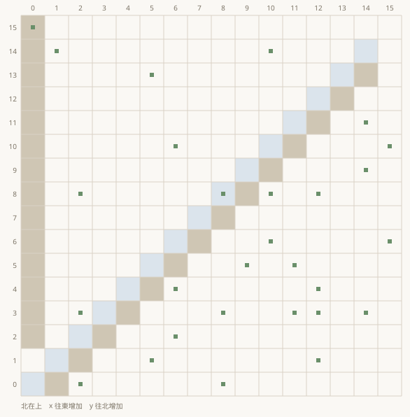
MAP.DAT ＋ ATTRIB.DAT 畫出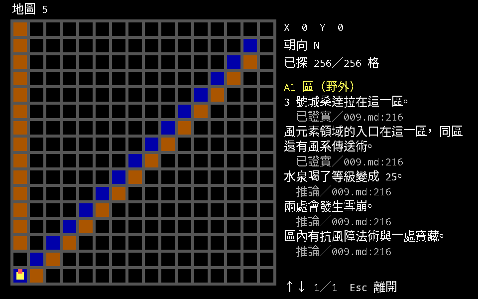
地圖 5 可通行 213 格、山區 28、森林 0、水域 15、事件格 28
- 沒有座標的提示
- 3 號城桑達拉在這一區。已證實／009.md:216
- 風元素領域的入口在這一區，同區還有風系傳送術。已證實／009.md:216
- 水泉喝了等級變成 25。推論／009.md:216
- 兩處會發生雪崩。推論／009.md:216
- 區內有抗風障法術與一處寶藏。推論／009.md:216
3 號城桑達拉在 (12,3)，風元素領域的入口在 (0,15)。同一區還有風系傳送術。
A2 礦坑與 Castle Pinehurst
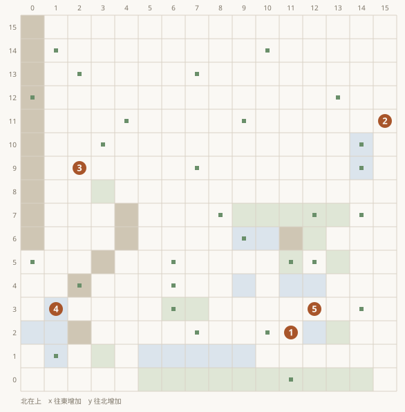
MAP.DAT ＋ ATTRIB.DAT 畫出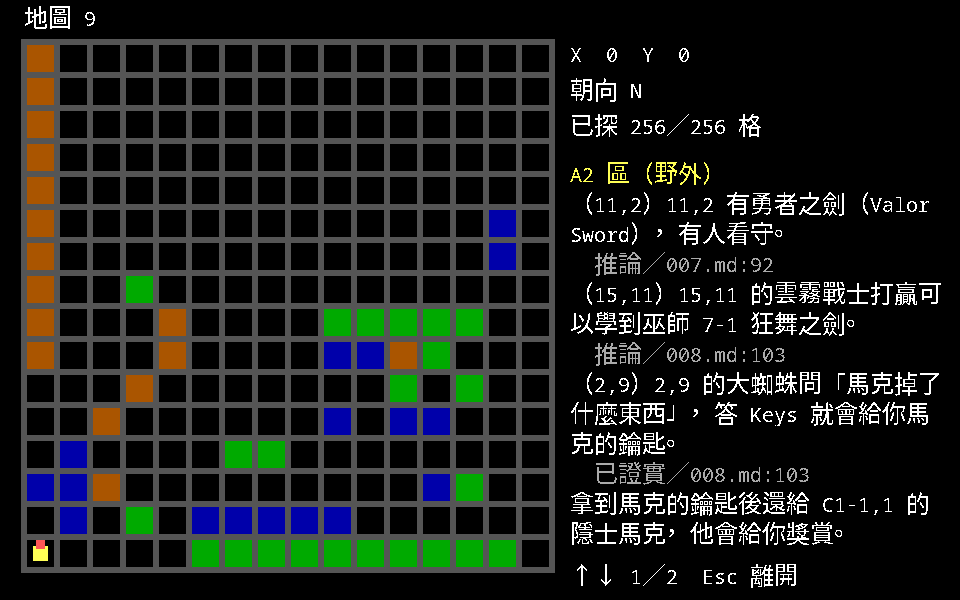
地圖 9 可通行 200 格、山區 16、森林 23、水域 17、事件格 33
- 111,211,2 有勇者之劍（Valor Sword），有人看守。推論／007.md:92
- 215,1115,11 的雲霧戰士打贏可以學到巫師 7-1 狂舞之劍。推論／008.md:103
- 32,92,9 的大蜘蛛問「馬克掉了什麼東西」，答 Keys 就會給你馬克的鑰匙。已證實／008.md:103
- 41,31,3 是 Castle Pinehurst。推論／008.md:176
- 512,312,3 是沙拉金的礦坑。推論／007.md:108
- 沒有座標的提示
- 拿到馬克的鑰匙後還給 C1-1,1 的隱士馬克，他會給你獎賞。推論／008.md:103
- 有個盜賊之坑，跳過去會得病。推論／008.md:176
- 有雪藏武士（原刊此處墨色極淡，轉錄信心低）。推論／008.md:176
這一區的東西很多：勇者之劍、Castle Pinehurst、沙拉金的礦坑，還有問謎題的大蜘蛛。
蜘蛛問「馬克掉了什麼東西」，答 Keys；拿到鑰匙之後還給 C1-1,1 的隱士馬克。
A3 海灘
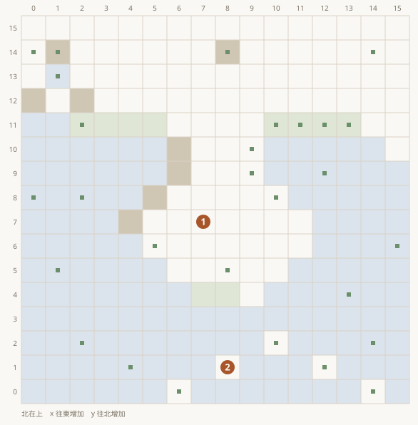
MAP.DAT ＋ ATTRIB.DAT 畫出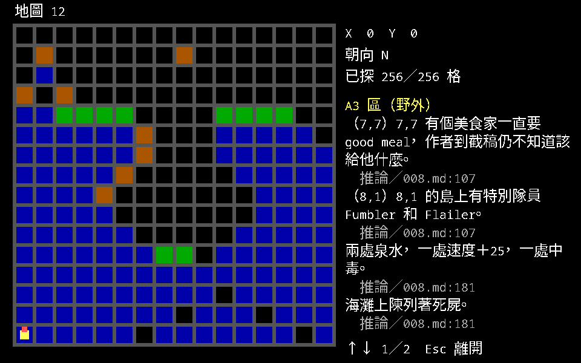
地圖 12 可通行 102 格、山區 8、森林 10、水域 136、事件格 30
- 17,77,7 有個美食家一直要 good meal，作者到截稿仍不知道該給他什麼。推論／008.md:107
- 28,18,1 的島上有特別隊員 Fumbler 和 Flailer。推論／008.md:107
- 沒有座標的提示
- 兩處泉水，一處速度＋25，一處中毒。推論／008.md:181
- 海灘上陳列著死屍。推論／008.md:181
- 有被鏈在木樁上的囚犯可以釋放。推論／008.md:181
(7,7) 那個一直要 good meal 的美食家，雜誌作者到截稿都沒解出來。 原文就是這樣寫的，這裡照抄。
A4 亞特蘭汀與水元素界
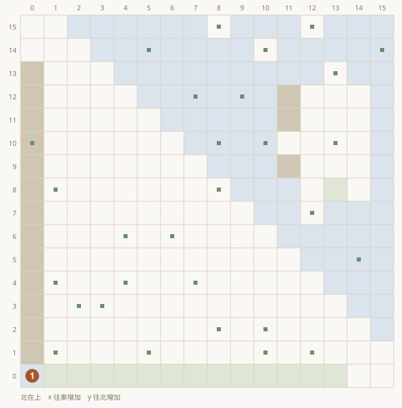
MAP.DAT ＋ ATTRIB.DAT 畫出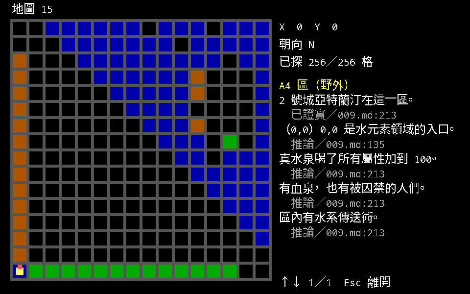
地圖 15 可通行 144 格、山區 16、森林 14、水域 82、事件格 30
- 10,00,0 是水元素領域的入口。推論／009.md:135
- 沒有座標的提示
- 2 號城亞特蘭汀在這一區。已證實／009.md:213
- 真水泉喝了所有屬性加到 100。推論／009.md:213
- 有血泉，也有被囚禁的人們。推論／009.md:213
- 區內有水系傳送術。推論／009.md:213
2 號城亞特蘭汀在 (13,10)，水元素領域的入口在 (0,0)。 真水泉喝了所有屬性加到 100。
B 欄
B1 冰雪地帶
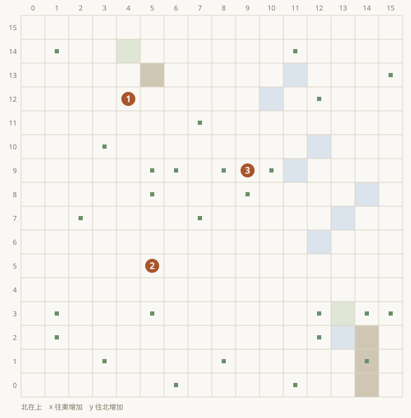
MAP.DAT ＋ ATTRIB.DAT 畫出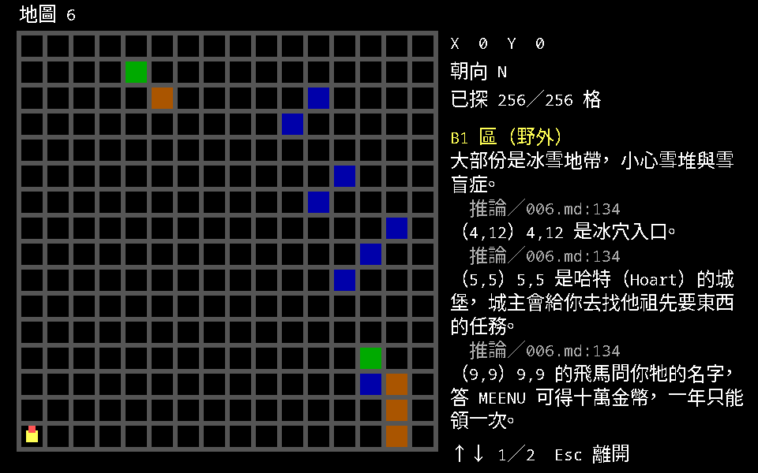
地圖 6 可通行 242 格、山區 4、森林 2、水域 8、事件格 29
- 14,124,12 是冰穴入口。推論／006.md:134
- 25,55,5 是哈特（Hoart）的城堡，城主會給你去找他祖先要東西的任務。推論／006.md:134
- 39,99,9 的飛馬問你牠的名字，答 MEENU 可得十萬金幣，一年只能領一次。已證實／006.md:134
- 沒有座標的提示
- 大部份是冰雪地帶，小心雪堆與雪盲症。推論／006.md:134
- 有一處結冰的泉水可以打破（力量＝401）。推論／006.md:189
- 有伐木工人挑戰隊員的伐木技術。推論／006.md:189
大部份是冰雪，小心雪堆與雪盲症。冰穴入口在 (4,12)，哈特城堡在 (5,5)。
(9,9) 的飛馬問你牠的名字，答 MEENU 可得十萬金幣 —— 一年只能領一次。
B2 馬戲團與四座城堡的傳送點
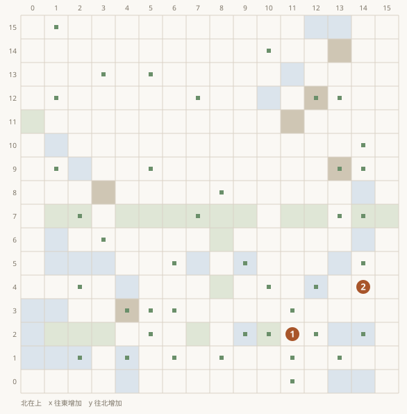
MAP.DAT ＋ ATTRIB.DAT 畫出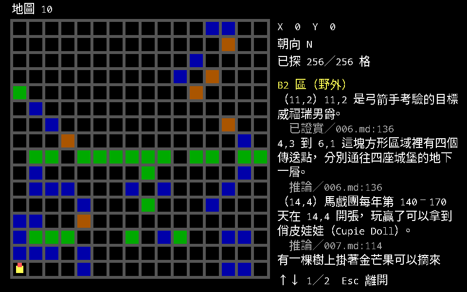
地圖 10 可通行 200 格、山區 6、森林 20、水域 30、事件格 43
- 111,211,2 是弓箭手考驗的目標威福瑞男爵。已證實／006.md:136
- 214,4馬戲團每年第 140–170 天在 14,4 開張，玩贏了可以拿到俏皮娃娃（Cupie Doll）。推論／007.md:114
- 沒有座標的提示
- 4,3 到 6,1 這塊方形區域裡有四個傳送點，分別通往四座城堡的地下一層。推論／006.md:136
- 有一棵樹上掛著金芒果可以摘來吃。推論／006.md:247
- 有 Orc 的會議與商人交易，都可以打斷。推論／006.md:247
- 有東西埋在雪中。推論／006.md:247
弓箭手考驗的目標威福瑞男爵在 (11,2)。
(4,3) 到 (6,1) 這塊方形區域裡有四個傳送點，分別通往四座城堡的地下一層。 城堡地下層雜誌評價不高（除了少數加屬性的寶物之外沒什麼用），但要去的話這裡最快。
馬戲團在 (14,4)，每年第 140–170 天才開張。
B3 邪惡巫師之塔
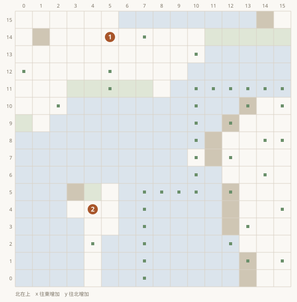
MAP.DAT ＋ ATTRIB.DAT 畫出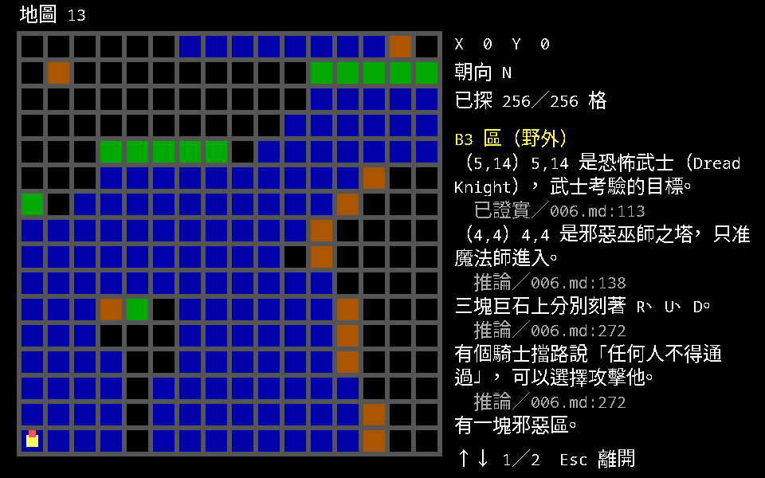
地圖 13 可通行 89 格、山區 12、森林 12、水域 143、事件格 42
- 15,145,14 是恐怖武士（Dread Knight），武士考驗的目標。已證實／006.md:113
- 24,44,4 是邪惡巫師之塔，只准魔法師進入。推論／006.md:138
- 沒有座標的提示
- 三塊巨石上分別刻著 R、U、D。推論／006.md:272
- 有個騎士擋路說「任何人不得通過」，可以選擇攻擊他。推論／006.md:272
- 有一塊邪惡區。推論／006.md:272
武士考驗的恐怖武士在 (5,14)，邪惡巫師之塔在 (4,4)（只准魔法師進入）。
三塊巨石上分別刻著 R、U、D。跟 C3 那三塊的 S、D、I 合起來就是 DRUIDS，
那是德魯伊地穴祭壇的密碼。
B4 莫里島
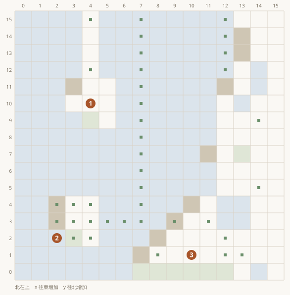
MAP.DAT ＋ ATTRIB.DAT 畫出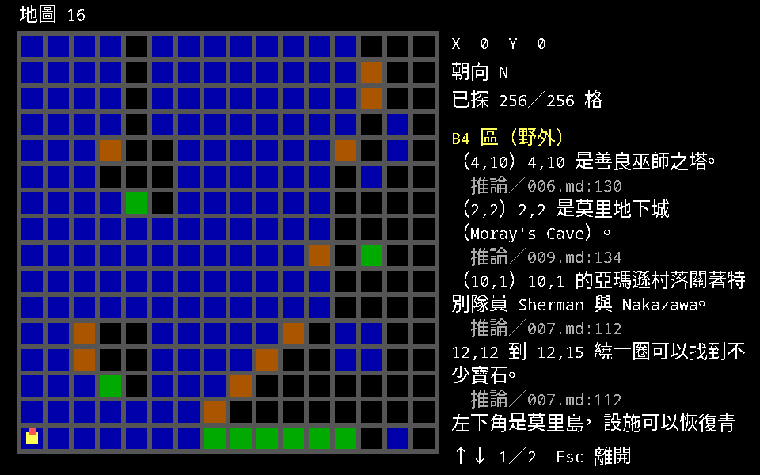
地圖 16 可通行 72 格、山區 11、森林 9、水域 164、事件格 40
- 14,104,10 是善良巫師之塔。推論／006.md:130
- 22,22,2 是莫里地下城（Moray's Cave）。推論／009.md:134
- 310,110,1 的亞瑪遜村落關著特別隊員 Sherman 與 Nakazawa。推論／007.md:112
- 沒有座標的提示
- 12,12 到 12,15 繞一圈可以找到不少寶石。推論／007.md:112
- 左下角是莫里島，設施可以恢復青春或提高屬性；沒先找旅行社就使用，可能得到相反的結果。推論／007.md:112
- 莫里體育館訓練一次力量加 17。推論／007.md:140
- 島上還有青春之泉、泥浴、馬殺雞、果汁吧台與大理石游泳池。推論／007.md:140
善良巫師之塔在 (4,10)，莫里地下城在 (2,2)，亞瑪遜村落在 (10,1)。
左下角是莫里島。島上有青春之泉、泥浴、馬殺雞、果汁吧台與大理石游泳池， 莫里體育館訓練一次力量加 17 —— 但要先在 1 號城 (14,8) 找過旅行社， 否則設施會給你相反的結果。
C 欄
C1 隱士馬克與科諾克之魂
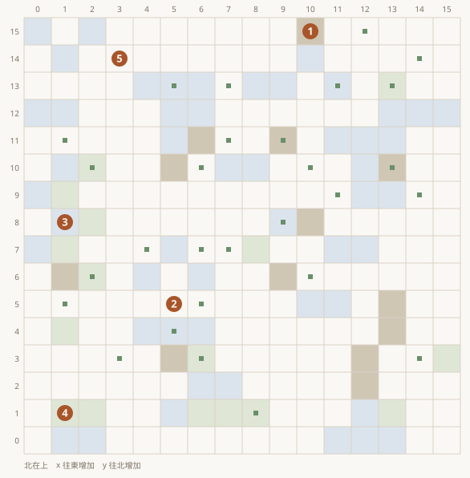
MAP.DAT ＋ ATTRIB.DAT 畫出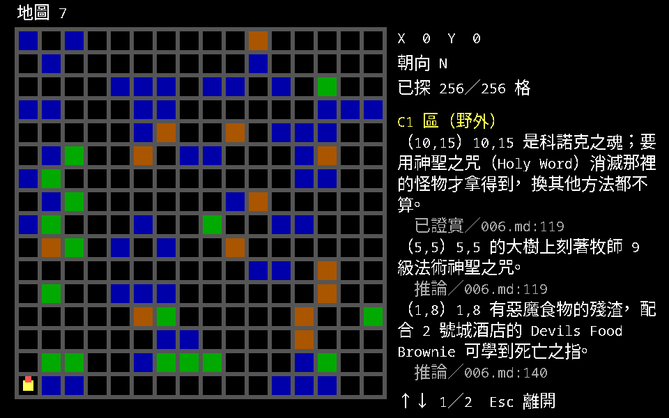
地圖 7 可通行 177 格、山區 13、森林 16、水域 50、事件格 33
- 110,1510,15 是科諾克之魂；要用神聖之咒（Holy Word）消滅那裡的怪物才拿得到，換其他方法都不算。已證實／006.md:119
- 25,55,5 的大樹上刻著牧師 9 級法術神聖之咒。推論／006.md:119
- 31,81,8 有惡魔食物的殘渣，配合 2 號城酒店的 Devils Food Brownie 可學到死亡之指。推論／006.md:140
- 41,11,1 的隱士馬克在找鑰匙；隊伍裡沒有他要的東西就會莫名死一個人。推論／006.md:140
- 53,143,14 是森林天堂城堡（Castle Woodhaven）。已證實／007.md:158
- 沒有座標的提示
- 有兩處噴泉，一處喝了法術等級變成 P（原文如此），一處喝了法力點數變成 200。推論／006.md:243
牧師考驗的科諾克之魂在 (10,15)。這一項有個硬條件：必須用神聖之咒（Holy Word） 消滅那裡的怪物，換其他方法都不算。而神聖之咒（牧師 9 級）刻在同一區 (5,5) 的大樹上。
(1,1) 的隱士馬克在找鑰匙。隊伍裡沒有他要的東西就會莫名死一個人 —— 先去 A2-2,9 答對蜘蛛的謎題拿到鑰匙再來。
C2 米德格特與最後地下城
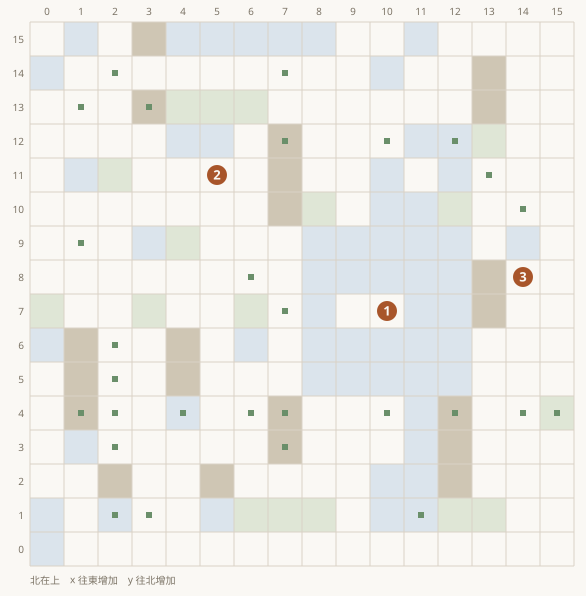
MAP.DAT ＋ ATTRIB.DAT 畫出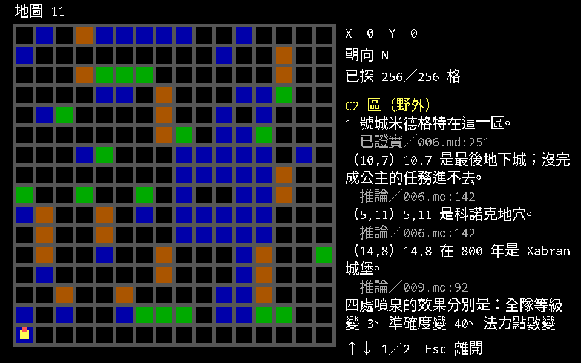
地圖 11 可通行 161 格、山區 21、森林 17、水域 57、事件格 31
- 110,710,7 是最後地下城；沒完成公主的任務進不去。推論／006.md:142
- 25,115,11 是科諾克地穴。推論／006.md:142
- 314,814,8 在 800 年是 Xabran 城堡。推論／009.md:92
- 沒有座標的提示
- 1 號城米德格特在這一區。已證實／006.md:251
- 四處噴泉的效果分別是：全隊等級變 3、準確度變 40、法力點數變 20。推論／006.md:251
- 有擺渡的人，另有人要收 50gp 教你過河的方法。推論／006.md:251
- 有魔法怪物陷阱可以跳進去。推論／006.md:251
- 有一處城堡廢墟。推論／006.md:251
主線的終點在這一區。1 號城米德格特在 (7,3)，最後地下城在 (10,7) （沒完成公主的任務進不去），科諾克地穴在 (5,11)。
(14,8) 在 800 年是 Xabran 城堡 —— 那是用時光機回到過去才看得到的。
最後地下城的座標雜誌自己寫過兩個，見矛盾與勘誤。
C3 德魯伊地穴與搭船處
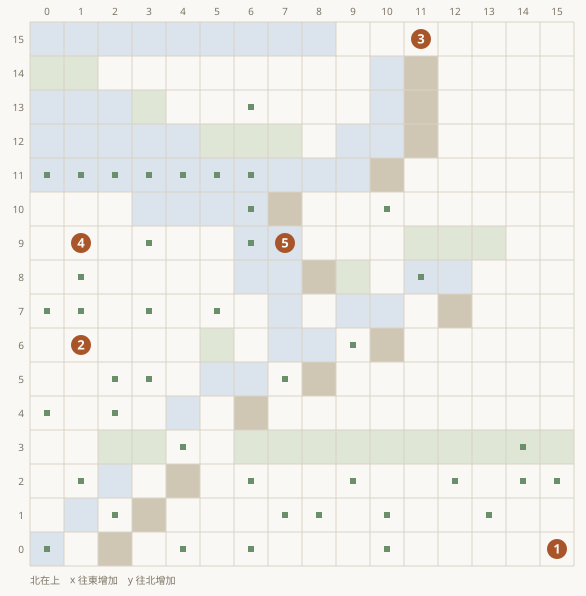
MAP.DAT ＋ ATTRIB.DAT 畫出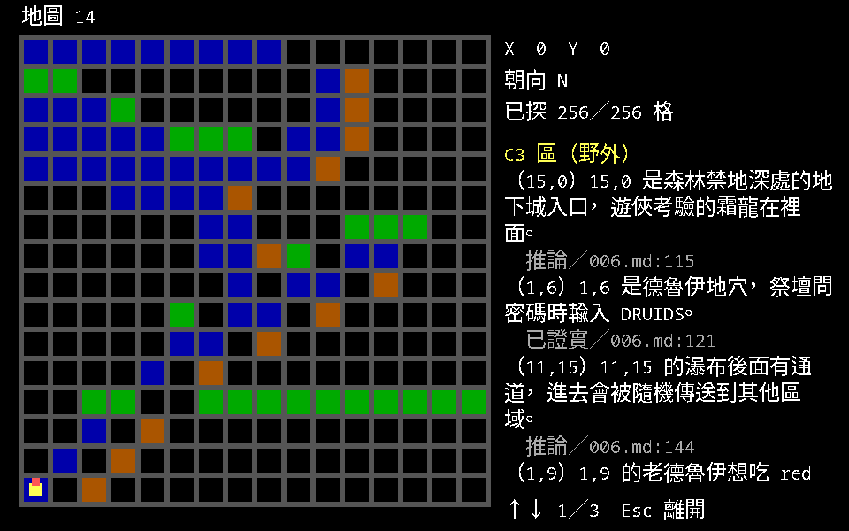
地圖 14 可通行 168 格、山區 13、森林 23、水域 52、事件格 46
- 115,015,0 是森林禁地深處的地下城入口，遊俠考驗的霜龍在裡面。推論／006.md:115
- 21,61,6 是德魯伊地穴，祭壇問密碼時輸入 DRUIDS。已證實／006.md:121
- 311,1511,15 的瀑布後面有通道，進去會被隨機傳送到其他區域。推論／006.md:144
- 41,91,9 的老德魯伊想吃 red wolf nipple chips。推論／006.md:144
- 57,97,9 有 Ferry，會帶你搭船到莫里島。推論／007.md:112
- 沒有座標的提示
- 三塊巨石上分別刻著 S、D、I；與 B3 的 R、U、D 合起來就是 DRUIDS。推論／006.md:278
- 有一道蛛網覆蓋的地門可以進入。推論／006.md:268
- 橡木林的樹上有異教徒的標記與符號，會讓整個隊伍困惑。推論／006.md:268
德魯伊地穴在 (1,6)，祭壇問密碼時輸入 DRUIDS。遊俠考驗的入口（森林禁地）在 (15,0)。
去莫里島的船在 (7,9)。(11,15) 的瀑布後面有通道，進去會被隨機傳送到別區。
C4 地獄之門
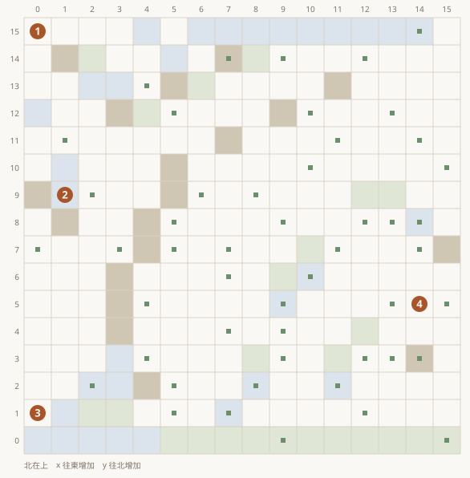
MAP.DAT ＋ ATTRIB.DAT 畫出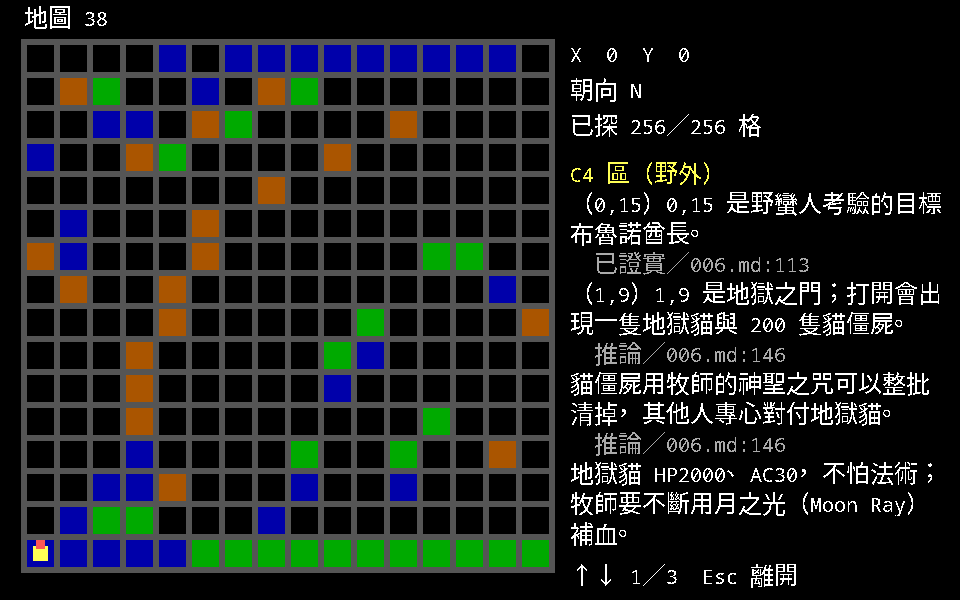
地圖 38 可通行 182 格、山區 19、森林 24、水域 31、事件格 53
- 10,150,15 是野蠻人考驗的目標布魯諾酋長。已證實／006.md:113
- 21,91,9 是地獄之門；打開會出現一隻地獄貓與 200 隻貓僵屍。推論／006.md:146
- 30,10,1 的怪物打贏約可得十一萬經驗。推論／006.md:146
- 414,514,5 是 800 年卡隆王與百萬巨龍決鬥的地點。推論／009.md:100
- 沒有座標的提示
- 貓僵屍用牧師的神聖之咒可以整批清掉，其他人專心對付地獄貓。推論／006.md:146
- 地獄貓 HP2000、AC30，不怕法術；牧師要不斷用月之光（Moon Ray）補血。推論／006.md:146
- 打贏地獄之門那場約可得一百多萬經驗與 +20 以上的裝備；20 級以上的隊伍在這裡練功效率最好。推論／006.md:146
- 到處是流砂，另外沙漏會把整個隊伍扔到別的區域。推論／006.md:146
- 有訊息說評審在 Mt Farview。已證實／006.md:239
- 有個小池可以進入（HP＝150）。推論／006.md:239
野蠻人考驗的布魯諾酋長在 (0,15)。
地獄之門在 (1,9)，打開會出現一隻地獄貓與 200 隻貓僵屍。雜誌給的打法是： 貓僵屍用牧師的神聖之咒整批清掉，其他人專心對付地獄貓（HP 2000、AC 30、不怕法術）， 牧師不斷用月之光（Moon Ray）補血。打贏約可得一百多萬經驗與 +20 以上的裝備 —— 20 級以上的隊伍在這裡練功效率最好。
D 欄
D1 龍穴與死亡地帶
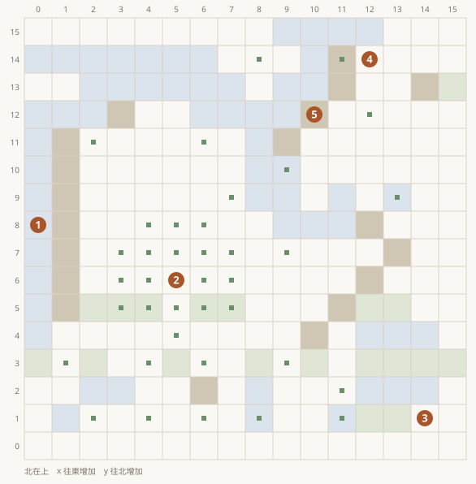
MAP.DAT ＋ ATTRIB.DAT 畫出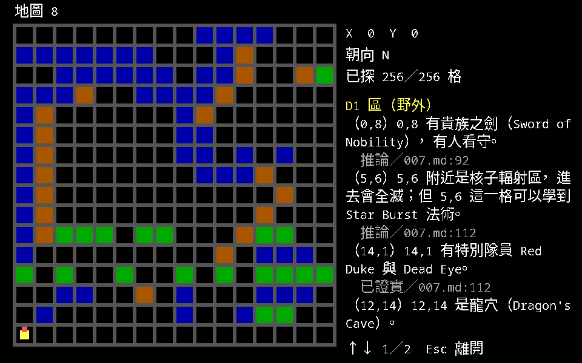
地圖 8 可通行 161 格、山區 19、森林 19、水域 57、事件格 42
- 10,80,8 有貴族之劍（Sword of Nobility），有人看守。推論／007.md:92
- 25,65,6 附近是核子輻射區，進去會全滅；但 5,6 這一格可以學到 Star Burst 法術。推論／007.md:112
- 314,114,1 有特別隊員 Red Duke 與 Dead Eye。已證實／007.md:112
- 412,1412,14 是龍穴（Dragon's Cave）。推論／008.md:141
- 510,1210,12 是 Dragon Lord，HP340、AC40，會放閃電，傷害約 40–500。推論／007.md:96
- 沒有座標的提示
- 有許願井可以許願（人性＝65）。推論／007.md:132
- 有死亡地帶與零點地帶。推論／007.md:132
貴族之劍在 (0,8)，龍穴入口在 (12,14)，Dragon Lord 在 (10,12)。
(5,6) 附近是核子輻射區，進去會全滅 —— 但 (5,6) 這一格本身可以學到 Star Burst 法術。 這一格與周圍的差別很要命，走錯一格就沒了。
D2 皇宮與考驗石板

MAP.DAT ＋ ATTRIB.DAT 畫出
地圖 34 可通行 192 格、山區 23、森林 13、水域 28、事件格 24
- 17,07,0 的山頂立著八大職業考驗的說明石板；完成考驗後回到這裡，職稱後面會多一個 +。已證實／006.md:109
- 214,1414,14 是皇宮 Luxus Palace Royale。已證實／008.md:156
- 36,86,8 的曼達谷城堡打一架可以賺經驗。推論／007.md:112
- 43,9女王的果園裡的水果吃了可以增加屬性，但只維持一回合戰鬥；3,9 那顆會石化。推論／007.md:112
- 57,137,13 有個老瘋子，要帶 Cupie Doll 給他才會講重要情報（區域見衝突表）。推論／008.md:87
- 沒有座標的提示
- 吃完水果可以去找守衛打架賺經驗。推論／007.md:112
- 大部份是荒涼沙漠。推論／007.md:136
主線的中繼站。八大職業考驗的說明石板在 (7,0) 的山頂，皇宮 Luxus Palace Royale 在 (14,14)。
(3,9) 女王的果園裡的水果吃了會石化；其他的水果可以增加屬性，但只維持一回合戰鬥。
D3 神秘之荒野
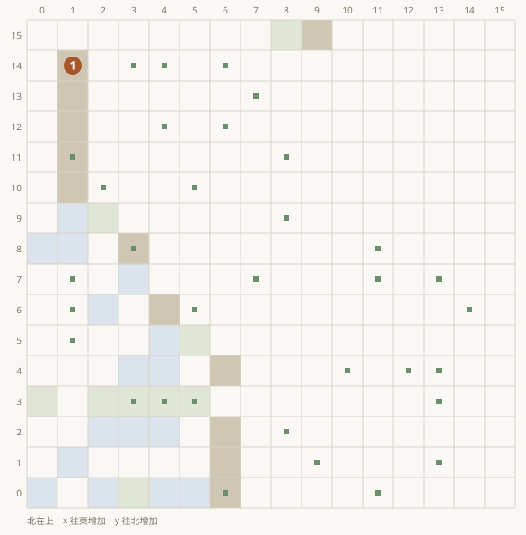
MAP.DAT ＋ ATTRIB.DAT 畫出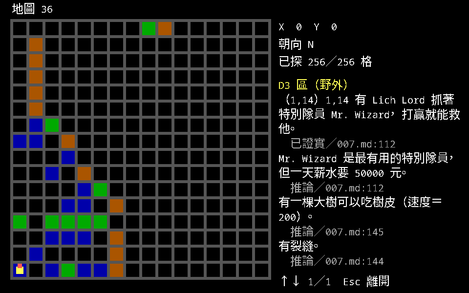
地圖 36 可通行 219 格、山區 12、森林 9、水域 16、事件格 34
- 11,141,14 有 Lich Lord 抓著特別隊員 Mr. Wizard，打贏就能救他。已證實／007.md:112
- 沒有座標的提示
- Mr. Wizard 是最有用的特別隊員，但一天薪水要 50000 元。推論／007.md:112
- 有一棵大樹可以吃樹皮（速度＝200）。推論／007.md:145
- 有裂縫。推論／007.md:144
(1,14) 有 Lich Lord 抓著特別隊員 Mr. Wizard。雜誌說他是最有用的特別隊員， 但一天薪水要五萬元。
D4 沼澤
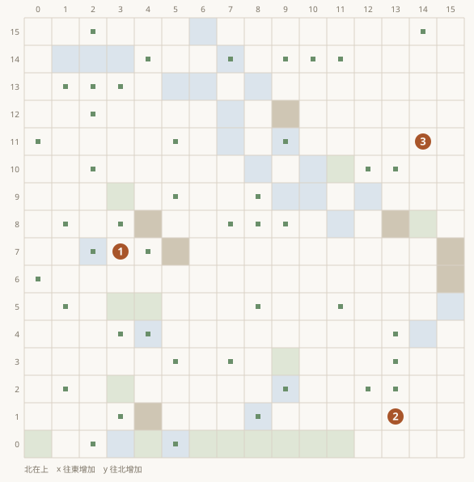
MAP.DAT ＋ ATTRIB.DAT 畫出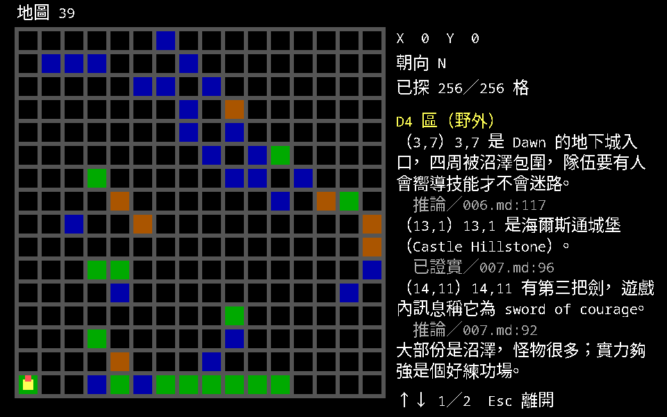
地圖 39 可通行 209 格、山區 7、森林 15、水域 25、事件格 47
- 13,73,7 是 Dawn 的地下城入口，四周被沼澤包圍，隊伍要有人會嚮導技能才不會迷路。推論／006.md:117
- 213,113,1 是海爾斯通城堡（Castle Hillstone）。已證實／007.md:96
- 314,1114,11 有第三把劍，遊戲內訊息稱它為 sword of courage。推論／007.md:92
- 沒有座標的提示
- 大部份是沼澤，怪物很多；實力夠強是個好練功場。推論／006.md:148
- 有恐懼農場可以進入。推論／006.md:276
- 有一群 Leper 在玩遊戲，可以打擾他們。推論／006.md:276
忍者考驗的入口（Dawn 的地下城）在 (3,7)，四周被沼澤包圍， 隊伍要有人會嚮導技能才不會迷路。海爾斯通城堡在 (13,1)，第三把劍在 (14,11)。
E 欄
E1 火山與火元素界
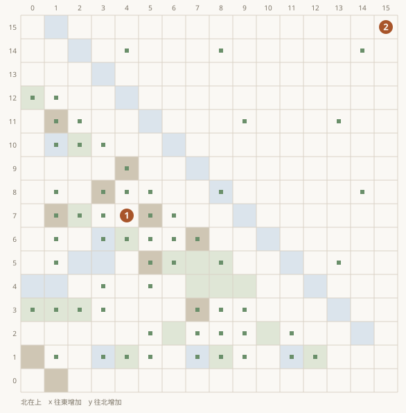
MAP.DAT ＋ ATTRIB.DAT 畫出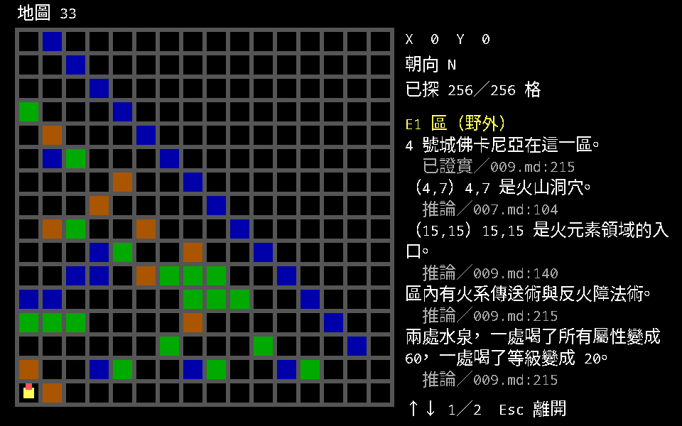
地圖 33 可通行 205 格、山區 10、森林 18、水域 23、事件格 60
- 14,74,7 是火山洞穴。推論／007.md:104
- 215,1515,15 是火元素領域的入口。推論／009.md:140
- 沒有座標的提示
- 4 號城佛卡尼亞在這一區。已證實／009.md:215
- 區內有火系傳送術與反火障法術。推論／009.md:215
- 兩處水泉，一處喝了所有屬性變成 60，一處喝了等級變成 20。推論／009.md:215
- 有火山口可以進入。推論／009.md:215
4 號城佛卡尼亞在 (3,4)，火山洞穴在 (4,7)，火元素領域的入口在 (15,15)。
E2 沙漠
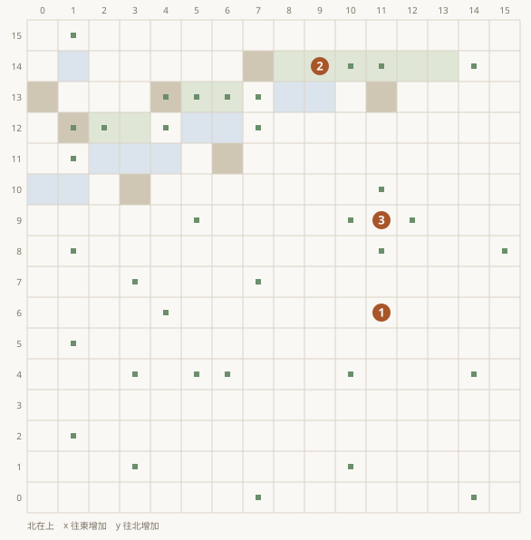
MAP.DAT ＋ ATTRIB.DAT 畫出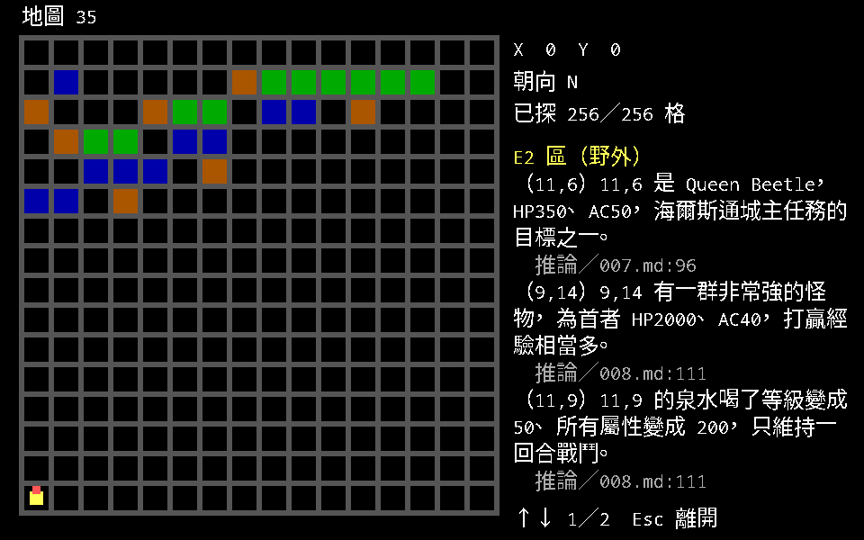
地圖 35 可通行 229 格、山區 7、森林 10、水域 10、事件格 37
- 111,611,6 是 Queen Beetle，HP350、AC50，海爾斯通城主任務的目標之一。推論／007.md:96
- 29,149,14 有一群非常強的怪物，為首者 HP2000、AC40，打贏經驗相當多。推論／008.md:111
- 311,911,9 的泉水喝了等級變成 50、所有屬性變成 200，只維持一回合戰鬥。推論／008.md:111
- 沒有座標的提示
- 沙漠裡的綠洲果樹可以摘水果（food＝40）。推論／008.md:147
海爾斯通城主任務的目標之一 Queen Beetle 在 (11,6)。
(11,9) 的泉水喝了等級變成 50、所有屬性變成 200 —— 只維持一回合戰鬥， 所以要接著打才有意義。
E3 Serpent King 與加屬性的泉
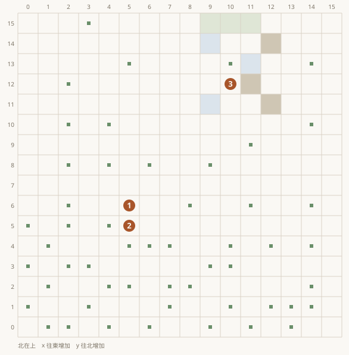
MAP.DAT ＋ ATTRIB.DAT 畫出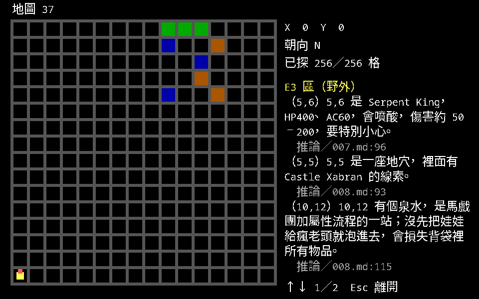
地圖 37 可通行 247 格、山區 3、森林 3、水域 3、事件格 55
- 15,65,6 是 Serpent King，HP400、AC60，會噴酸，傷害約 50–200，要特別小心。推論／007.md:96
- 25,55,5 是一座地穴，裡面有 Castle Xabran 的線索。推論／008.md:93
- 310,1210,12 有個泉水，是馬戲團加屬性流程的一站；沒先把娃娃給瘋老頭就泡進去，會損失背袋裡所有物品。推論／008.md:115
- 沒有座標的提示
- 有一半是沙漠，綠洲可以拿到食物。推論／008.md:115
- 有地震與沙漠風暴。推論／008.md:170
Serpent King 在 (5,6)，另一個城主任務的目標。(5,5) 是一座地穴， 裡面有 Castle Xabran 的線索。
(10,12) 的泉水是馬戲團加屬性流程的一站。沒先把娃娃給瘋老頭就泡進去， 會損失背袋裡所有物品。
E4 桑德索巴與土元素界
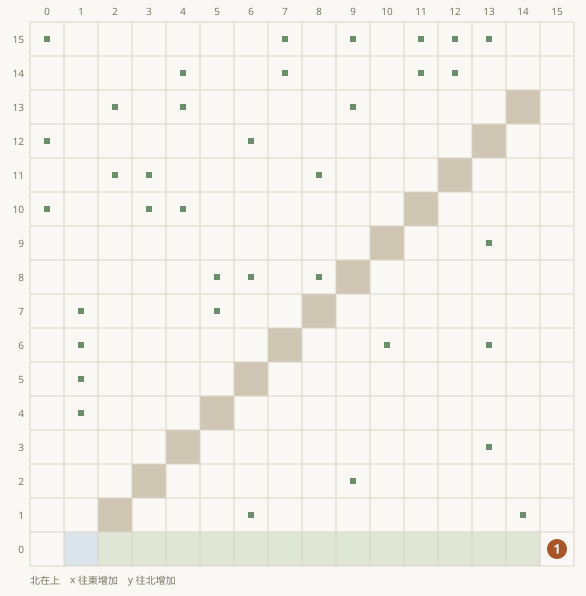
MAP.DAT ＋ ATTRIB.DAT 畫出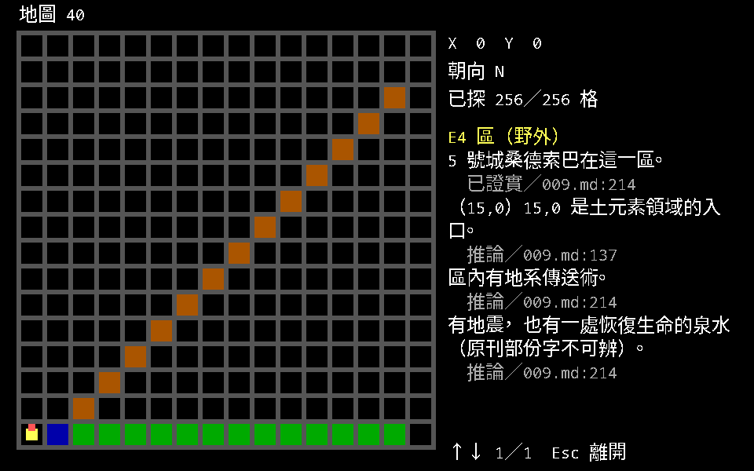
地圖 40 可通行 229 格、山區 13、森林 13、水域 1、事件格 37
- 115,015,0 是土元素領域的入口。推論／009.md:137
- 沒有座標的提示
- 5 號城桑德索巴在這一區。已證實／009.md:214
- 區內有地系傳送術。推論／009.md:214
- 有地震，也有一處恢復生命的泉水（原刊部份字不可辨）。推論／009.md:214
5 號城桑德索巴在 (4,10)，土元素領域的入口在 (15,0)。